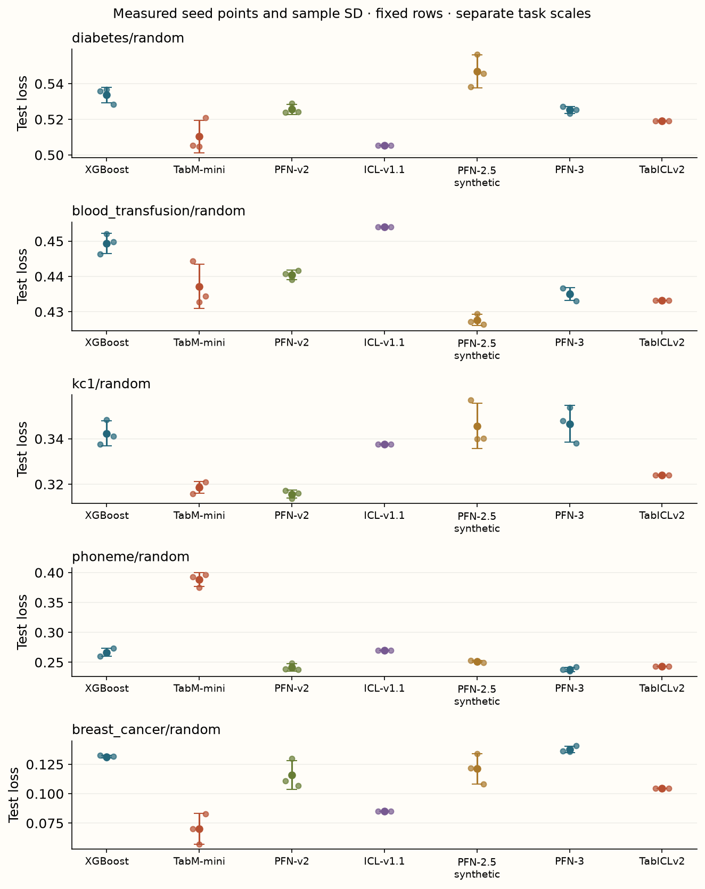
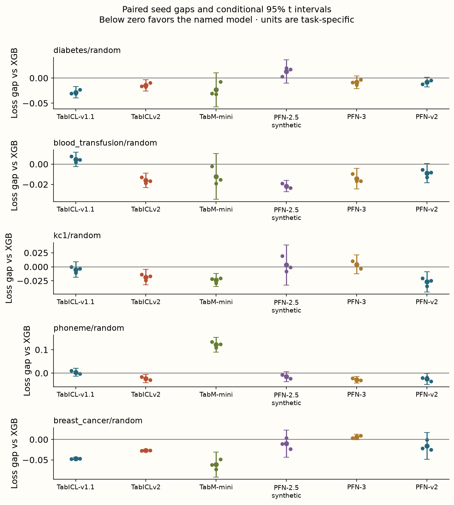
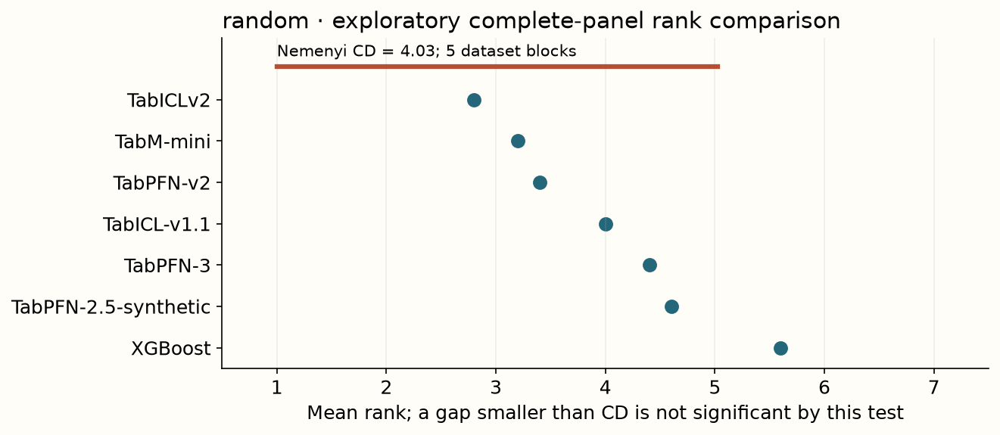

Year 2 · Quarter 3 · Lesson 070
Defend your foundation-model baseline
Understand the computation. Challenge the evidence. Produce a defensible result.
Core reading: 35–50 minutes. Lab: 45–75 minutes plus declared experiment time. This sequence builds the strong single-table baseline and information discipline required to test the relational thesis.
Retrieve before reading
Without notes: Can a v2 score fill an unrun v3 entry in a current-model checkpoint? Explain why, then recall a related failure mode from an older lesson.
Select a baseline whose evidence you can defend¶
Your goal is to produce an independently reviewable comparison of pretrained in-context learners, a trained TabM and XGBoost, then identify what relational information could add beyond them. A passing report can recommend a tree, an in-context learner or an ensemble under a stated budget. It must not manufacture a foundation-model win.
The core references are Nature TabPFN v2, TabICL, TabM and the version-specific TabPFN-3 technical report. The curriculum's newer TabPFN-2.5/3 and TabICLv2 extension arms are explicitly tracked. Availability of their packages is not proof of checkpoint access or a completed run.
The best baseline is a procedure you can defend and deploy¶
A research baseline serves two purposes. It estimates what a strong existing method can achieve on the task, and it provides a credible control for a proposed improvement. A weakly configured baseline makes an apparent gain difficult to interpret; an impractically expensive baseline may be scientifically interesting while unsuitable for the deployment decision.
Begin by naming the prediction unit, target, information cutoff and operational constraint. A row-level binary classification panel is not automatically a proxy for a relational forecasting task with repeated entities and delayed labels. The checkpoint prepares the comparison discipline that the later task will need.
Separate the mechanism you implemented from the pretrained system you invoked. Implementing context masking teaches an information boundary; running a version-pinned checkpoint measures a particular learned predictor; reanalyzing saved outputs audits an existing experiment. All are valuable, but they support different claims of understanding and reproduction.
The final recommendation can favor a tree, TabM or an in-context learner. Its quality comes from the evidence chain and the fit to constraints, not from rewarding the newest model family. State what observation would change your recommendation so the conclusion remains testable.
Keep the requested roster visible¶
The measured historical panel contains XGBoost, TabM-mini, Nature-v2 TabPFN and TabICL v1.1. It uses five real binary tasks: diabetes, blood transfusion, kc1, phoneme and Wisconsin diagnostic breast cancer. Each task is capped at 600 rows, split 60/20/20 with split seed 70, and evaluated with model/inference seeds 0, 1 and 2. The pretrained arms use one view; fitted arms use two validation-selected small recipes. The historical four-arm summary is retained separately so adding methods does not silently rewrite its rank definition.
The extended panel measures all seven arms: the four historical arms plus TabPFN-2.5-synthetic, TabPFN-3 and TabICLv2. The current extension uses the exact same data identities, row partitions and seeds; the assembler rejects a mismatched or incomplete panel. It adds 45 runs, producing 105 selected task/seed/model results in total. TabPFN package 8.5.0 and TabICL package 2.2.0 load explicitly selected, revision-pinned checkpoints. Read the checkpoint filename and SHA-256, not just the package version.
The 2.5 arm intentionally names its synthetic-pretrained checkpoint (v2.5_default-2), which is distinct from the later real-data-tuned default. It is not a claim about every 2.5 checkpoint. Newer models receive one inference view, just like the historical pretrained arms. These local runs do not reproduce the technical reports' larger benchmark suites, ensembles or compute allocations. The complete roster is measured; the full paper benchmark protocols remain unreproduced.
This distinction is the checkpoint's first test of judgment. Rank only a declared complete panel. Report missing requested arms beside that panel; never fill their scores with a nearby version, silently drop them from a claimed full comparison or treat an access error as poor model accuracy.
Model identity includes the checkpoint and inference recipe¶
A package version can support several checkpoints, and a model family can contain differently pretrained or adapted variants. Record the checkpoint filename, revision and hash, along with preprocessing and inference settings. A label such as “v2.5” is insufficient when synthetic-pretrained and later real-data-tuned checkpoints differ.
The current panel contains seven measured arms on a shared five-task, three-seed design. That is 7×5×3=105 selected results. The historical four-arm panel remains a separate summary because adding opponents changes the definition of ranks even when old predictions remain identical.
For a simple rank example, suppose A and B have losses 0.2 and 0.3. Their ranks are 1 and 2. Add C with loss 0.1; A and B now rank 2 and 3 without either prediction changing. The changed rank is a property of the comparison pool, not a regression in A or B.
Missing arms should retain a status such as not run, unsupported or access failed, with the reason. Never substitute a nearby version's score. A complete measured panel establishes coverage of that local roster; it does not establish reproduction of every model's original benchmark protocol.
Pretraining-data overlap with public tasks is another uncertainty to record when it has not been independently audited. A downstream split prevents direct local train/test overlap, but it does not by itself establish what an externally pretrained model encountered historically. Keep this limitation separate from the checks you can perform on local row identities.
Freeze a shared prediction contract¶
Each arm predicts the probability of the same positive class on the same test row IDs. Training-derived preprocessing, context membership and validation decisions are recorded. Test labels enter scoring after selection. Each saved result includes predictions, targets, validation candidate errors, the selected index and measured durations. A CHECK reconstructs log loss from these artifacts and verifies that the winner was selected on validation.
Inference seeds for a pretrained model vary its downstream configuration, not its pretraining history. Zero variation across three such seeds does not mean there is no uncertainty. Fixed splits also hide split uncertainty. For the five-dataset panel, dataset means—not individual seeds—form the blocks in the rank analysis.

Make the saved result independently scoreable¶
Each record should identify dataset version, row IDs, target mapping, model/checkpoint, seed role, selected candidate and probability outputs. A separate evaluator should be able to reconstruct the reported metric without refitting the model or trusting a precomputed scalar.
For binary log loss, map the declared positive class consistently. A prediction p contributes −ln p when y=1 and −ln(1−p) when y=0. Validate finite probabilities in range and disclose any numerical clipping. Preserve every required test row.
Selection should be reconstructible too. Store validation candidate errors and the chosen index, then verify the index follows the declared rule. If a pretrained arm uses one view while a fitted arm selects among two recipes, report that allocation rather than calling the procedures identical in every respect.
Seeds have different meanings across arms. A training seed can change learned neural weights. An inference seed for a fixed pretrained checkpoint may change permutations, subsampling or other downstream configuration. Neither creates an independently pretrained foundation model. Zero variation across those seeds does not imply zero uncertainty.
Fixed splits also leave split uncertainty unmeasured. The reported seed intervals should say what randomness they cover. A narrow interval over three downstream seeds cannot certify transfer to another table or another time period.
Compare quality and cost without mixing ledgers¶
For each task, show all seed points, mean log loss, sample standard deviation and paired differences from XGBoost. Then show mean ranks and an exploratory Friedman/Nemenyi summary over the five task means. Raw gaps preserve effect magnitude; ranks provide a scale-independent cross-task view. With five small datasets and a restricted method pool, neither is a universal ordering of tabular learning.
Report context preparation/fitting and prediction time separately. The measured inference path uses local CPU and the recorded batch policy. Download and historical offline pretraining are separate costs, not zero. Timings were observed on a shared CPU host; other processes can affect them, so they are a practical run ledger rather than a controlled hardware benchmark. Pretraining-data overlap with these public tasks has not been independently audited. A fixed pretrained model may need little downstream fitting yet expensive context-conditioned prediction. TabM pays optimization cost up front, while its later prediction does not attend to all training rows. Those cost structures matter for deployment volume and context refreshes.

Measured interpretation. Random: 5 task blocks; TabICLv2 has the smallest mean rank (2.800); Friedman p=0.4329, Nemenyi CD=4.028. These restricted panels and small budgets support a local baseline decision, not universal superiority. Intervals below describe model-seed variation on fixed rows.
Inspect the numerical evidence table
| regime | dataset | arm | mean | sd | seconds |
|---|---|---|---|---|---|
| random | blood_transfusion/random | TabICL-v1.1 | 0.4540 | 0.0000 | 8.7834 |
| random | blood_transfusion/random | TabICLv2 | 0.4333 | 0.0000 | 8.0171 |
| random | blood_transfusion/random | TabM-mini | 0.4372 | 0.0062 | 4.0225 |
| random | blood_transfusion/random | TabPFN-2.5-synthetic | 0.4277 | 0.0016 | 11.3720 |
| random | blood_transfusion/random | TabPFN-3 | 0.4351 | 0.0018 | 11.9945 |
| random | blood_transfusion/random | TabPFN-v2 | 0.4405 | 0.0013 | 17.5900 |
| random | blood_transfusion/random | XGBoost | 0.4494 | 0.0029 | 0.2734 |
| random | breast_cancer/random | TabICL-v1.1 | 0.0849 | 0.0000 | 21.7202 |
| random | breast_cancer/random | TabICLv2 | 0.1047 | 0.0000 | 19.0416 |
| random | breast_cancer/random | TabM-mini | 0.0701 | 0.0130 | 3.2616 |
| random | breast_cancer/random | TabPFN-2.5-synthetic | 0.1213 | 0.0129 | 49.7173 |
| random | breast_cancer/random | TabPFN-3 | 0.1376 | 0.0028 | 31.3161 |
| random | breast_cancer/random | TabPFN-v2 | 0.1159 | 0.0123 | 90.4343 |
| random | breast_cancer/random | XGBoost | 0.1315 | 0.0012 | 0.3593 |
| random | diabetes/random | TabICL-v1.1 | 0.5053 | 0.0000 | 8.5965 |
| random | diabetes/random | TabICLv2 | 0.5192 | 0.0000 | 9.2080 |
| random | diabetes/random | TabM-mini | 0.5104 | 0.0091 | 3.9076 |
| random | diabetes/random | TabPFN-2.5-synthetic | 0.5469 | 0.0092 | 14.1956 |
| random | diabetes/random | TabPFN-3 | 0.5253 | 0.0020 | 13.8937 |
| random | diabetes/random | TabPFN-v2 | 0.5256 | 0.0028 | 18.8579 |
| random | diabetes/random | XGBoost | 0.5336 | 0.0044 | 0.1712 |
| random | kc1/random | TabICL-v1.1 | 0.3375 | 0.0000 | 16.4419 |
| random | kc1/random | TabICLv2 | 0.3240 | 0.0000 | 12.9970 |
| random | kc1/random | TabM-mini | 0.3186 | 0.0026 | 4.5903 |
| random | kc1/random | TabPFN-2.5-synthetic | 0.3457 | 0.0099 | 42.9113 |
| random | kc1/random | TabPFN-3 | 0.3466 | 0.0080 | 17.5424 |
| random | kc1/random | TabPFN-v2 | 0.3157 | 0.0018 | 60.8958 |
| random | kc1/random | XGBoost | 0.3424 | 0.0055 | 0.2287 |
| random | phoneme/random | TabICL-v1.1 | 0.2700 | 0.0000 | 8.5409 |
| random | phoneme/random | TabICLv2 | 0.2434 | 0.0000 | 11.2923 |
| random | phoneme/random | TabM-mini | 0.3883 | 0.0113 | 4.1217 |
| random | phoneme/random | TabPFN-2.5-synthetic | 0.2517 | 0.0017 | 12.3112 |
| random | phoneme/random | TabPFN-3 | 0.2382 | 0.0035 | 19.1343 |
| random | phoneme/random | TabPFN-v2 | 0.2416 | 0.0060 | 22.0763 |
| random | phoneme/random | XGBoost | 0.2667 | 0.0069 | 0.3353 |

The paired intervals condition on the fixed split and only three downstream seeds; they do not cover split uncertainty or pretraining variation. A negative loss gap favors the named model over XGBoost. Inspect each task in its own metric units.

The critical-distance bar belongs to the complete declared method pool. It is an exploratory multiple-comparison threshold over dataset-level ranks, not a confidence interval around a model score.
Read a winner claim through effect, uncertainty and cost¶
First inspect task-level loss gaps. A negative model-minus-XGBoost gap favors the named model on that task. Keep the metric units and paired rows explicit. Then average seeds within each dataset and calculate ranks across the declared pool.
With five datasets, a mean-rank ordering is based on five task blocks. The current panel's smallest mean rank does not by itself establish overall superiority; its exploratory rank test does not resolve a broad winner. A critical-distance bar is a multiple-comparison threshold in rank units, not a confidence interval around a model's log loss.
Practical significance can differ from statistical resolution. A small but consistent latency gain may matter operationally even when quality differences are unresolved. A large quality gain on one critical task may justify a local choice without supporting a universal ranking.
Cost has a lifecycle. Offline pretraining is a historical investment; checkpoint loading and context preparation occur in the downstream system; repeated query prediction determines serving cost. TabM pays downstream optimization up front and later predicts without attending to the full training table. An in-context learner can have little downstream weight fitting while paying context-dependent inference cost.
Suppose procedure A costs 100 units to prepare and 1 per query batch, while B costs 10 to prepare and 4 per batch. Their total costs are 100+n and 10+4n. They tie at n=30 batches. Below that volume B is cheaper; above it A is cheaper. This illustrative break-even calculation explains why a single fit-time ranking is not a deployment decision.
The actual timings here were observed on a shared CPU host. Treat them as a recorded local workload, with possible interference, rather than a controlled hardware performance certificate. Keep cold loading, context preparation and prediction definitions consistent when comparing arms.
Make a transfer test, not a victory slide¶
Choose one mechanism from lessons 61–69 and predict an intervention outcome before running it: reduce context, change label availability, remove a feature, add an unsupported class or switch from random to temporal evaluation. Keep the unperturbed baseline and identify what changed. Carry that prediction and its actual outcome into your report, including a failed prediction.
Use the evidence from lesson 65 to discuss representation access, lesson 67 to discuss local context and adaptation, and lesson 68 to discuss prior mismatch. Do not pool incompatible split seeds, row caps or metrics across those lessons into a new leaderboard. They form a connected argument because the mechanisms and contracts are explicit, not because every number belongs in one table.
Write a relational research handoff¶
Name the entity, target time and prediction horizon for a future relational task. List information available to a strong single-table baseline and additional relations you expect to matter. Propose a relational intervention that preserves the same prediction contract and evaluates whether those relations add value. Beat the best deployable baseline selected using validation, not the model that happened to lose one of these small historical comparisons.
State one result that would count against your relational thesis. For example, if a leakage-safe aggregate table plus a strong pretrained learner matches the relational model at lower cost on the target regime, that is substantive counter-evidence. It should remain in the thesis dossier even if a different dataset favors relational learning.
A relational hypothesis must identify additional legal information¶
A relational model earns an advantage by using structure or information that a strong single-table procedure cannot exploit as effectively under the same contract. Name that information: entity histories, event timing, typed links, neighborhood labels or cross-table interactions. Then specify which parts can already be summarized into leakage-safe aggregates for the baseline.
For example, a future churn task may permit a customer's past interactions and related account events before a cutoff. A strong aggregate table can include counts, recency and prior outcomes available then. A relational model might preserve the sequence or typed interaction structure discarded by those aggregates. The experiment should test that concrete difference rather than comparing rich relational inputs with an impoverished flat baseline.
Keep the target rows, horizon, feature/label availability and selection budget aligned. If the relational method gets later labels or additional entities that the baseline was forbidden to use, the result does not isolate representation of relations. Information parity matters before architectural novelty.
Choose a transfer intervention before observing its result. Reduce eligible context, remove a relation type, shift the time window or replace relational structure with matched aggregates. Predict the direction and identify what remains fixed. A failed prediction is useful evidence if it was recorded before the measurement.
State counter-evidence explicitly. If a legal aggregate table plus a strong pretrained learner matches the relational model at lower cost, that weakens the claim that the retained relation structure is necessary under this task. Preserve that result rather than moving the goalposts to another dataset.
The exit report should connect the complete local roster, reconstructed scores, uncertainty, lifecycle cost and one falsifiable relational hypothesis. The course package can supply runnable tools and author evidence; mastery requires you to produce and defend your own artifact without borrowing the lesson's conclusion.
Exit: submit an executable argument¶
Submit the frozen protocol, version/checkpoint and data identities, complete measured panel, explicit unrun-arm ledger, paired uncertainty/ranks, cost report and one prespecified transfer test. Add a short deployment recommendation and a research handoff with a falsifiable relational hypothesis. Distinguish which code you implemented, which checkpoints you ran, which saved results you reanalyzed and which original paper results remain unreproduced.
The learning sequence is ready when these tasks are runnable and reviewable. Your personal checkpoint mastery is assessed only after you submit the evidence and explain it without relying on the lesson text. Ask the tutor to challenge the weakest link in your argument before moving into self-supervised encoders.
Run the companion lab
What you will do: Reconstruct the saved predictions and validation selections for all seven model arms, then calculate paired summaries and ranks. The full rerun is explicitly gated.
choose_validation: Keep final model choice independent of test labels.paired_summary: Implement complete crossed-panel checking, seed-first aggregation, rank statistics and conditional intervals.
Author-reference evidence: 105 selected results: seven named model/checkpoint arms × five datasets × three seeds.
Submit: your completed notebook and student-l070-exit.json, plus your written interpretation. CHECK cells give immediate code feedback; paste the EXIT output here for a reasoning review.
Student notebook · Prepared lab · Open in Colab
2 substantive code tasks feed the live experiment, followed by behavioral CHECKs and a written EXIT artifact. The notebook contains the explanation and portable figures so it is teachable independently.
Ask me follow-up questions about any operation, CHECK or conclusion you cannot defend. Paste the EXIT artifact and your explanation for review. Revisit the retrieval question tomorrow and again in a week, before reopening the reference.